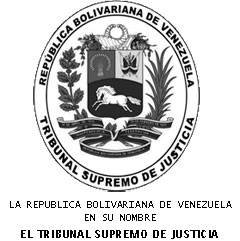

 |
MAGISTRADA PONENTE: TANIA D’ AMELIO CARDIET
El 28 de mayo de 2025, fue recibido en esta Sala
escrito contentivo de la acción de amparo constitucional con medida cautelar, ejercida
por las abogadas Ángela Jaramillo y Lyz Pérez Jaramillo, inscritas en el
Instituto de Previsión Social del Abogado bajo los números 71.932 y 304.948,
respectivamente, actuando con el carácter de defensoras privadas -según consta
en autos- de las ciudadanas ESCARLET COROMOTO GONZÁLEZ RODRÍGUEZ y JORLET
COROMOTO SICILIA GONZÁLEZ, titulares de las cédulas de identidad números
V-4.249.982 y V-18.329.138, en ese orden, contra la decisión dictada por
la Sala Ocho de la Corte de Apelaciones del Circuito Judicial Penal del Área
Metropolitana de Caracas, el 9 de mayo de 2025, a través de la cual se declaró
con lugar el recurso de apelación ejercido por la Fiscalía Centésima Sexagésima
Tercera del Ministerio Público del mismo Circuito Judicial Penal, y
revocó la sentencia proferida por el Juzgado Noveno de Primera Instancia
en Funciones de Juicio del Circuito Judicial Penal del Área Metropolitana de
Caracas, que absolvió a las referidas ciudadanas, en el marco del proceso penal
que se les sigue por la presunta comisión del delito de extorsión por relación
especial en grado de cómplices no necesarias, previsto en el artículo 17, en
concordancia con el encabezamiento del artículo 11, ambos de la Ley contra el
Secuestro y la Extorsión.
En esa misma fecha, se dio cuenta en Sala y se
designó ponente al Magistrado Luis Fernando Damiani Bustillos.
El 19 de junio de 2025, la abogada Ángela Jaramillo,
actuando en su condición de defensora de las ciudadanas Escarlet Coromoto González
Rodríguez y Jorlet Coromoto Sicilia González, informó a esta Sala que el
expediente donde cursa la sentencia anulada por la Sala 8 de la Corte de
Apelaciones, se encuentra actualmente en el Tribunal Vigésimo Cuarto de Primera
Instancia en funciones de Juicio del Circuito Judicial Penal del Área
Metropolitana de Caracas.
El 12 de diciembre de 2025, mediante sentencia N°
2120 se acordó medida cautelar de suspensión de efectos de la sentencia dictada
el 9 de mayo de 2025, por la Sala 8 de la Corte de Apelaciones del Circuito
Judicial Penal del Área Metropolitana de Caracas.
El 20 de marzo de 2026, la abogada Ángela Jaramillo,
actuando en su condición de defensora de las ciudadanas Escarlet Coromoto
González Rodríguez y Jorlet Coromoto Sicilia González, solicitó pronunciamiento
de la presente causa.
El 30 de abril de 2026, se reasignó la ponencia del
presente expediente a la Magistrada Dra. TANIA D´AMELIO CARDIET, quien con tal
carácter suscribe el presente fallo.
El 24 de septiembre de 2026, la abogada Ángela
Jaramillo, actuando en su condición de defensora de las ciudadanas Escarlet
Coromoto González Rodríguez y Jorlet Coromoto Sicilia González, ratificó su
interés procesal en la presente causa.
Realizado el estudio de las actas que conforman el
presente expediente, esta Sala Constitucional procede a decidir previas las
siguientes consideraciones:
I
DE LA ACCIÓN DE AMPARO CONSTITUCIONAL
La acción de amparo constitucional se fundamentó en
lo siguiente:
Que “[n]osotros, ÁNGELA JARAMILLO Y LIZ
PÉREZ JARAMILLO, (…), actuando en nuestra condición de
defensores privados de las ciudadanas ESCARLET COROMOTO GONZÁLEZ
RODRÍGUEZ y JORLET COROMOTO SICILIA GONZÁLEZ, (…) las
cuales detentan la condición de acusadas por el delito de extorsión por
relación especial en grado de cómplices no necesarias, previsto y sancionado en
el artículo 17, en concordancia con el encabezamiento del artículo 11, ambos de
la Ley Contra el Secuestro y la Extorsión, en la causa penal identificada con
el número 6362-25 de la nomenclatura interna de la Sala Octava (8o)
de la Corte de Apelaciones del Circuito Judicial Penal del Área Metropolitana
de Caracas, acudimos ante su competente autoridad con el objeto de
interponer acción de amparo constitucional contra la sentencia dictada el 9 de mayo
de 2025 por la referida Corte, que declaró: i) con lugar
el recurso de apelación interpuesto por la representación de la Fiscalía
Centésima Sexagésima Tercera (163°) del Ministerio Público del Área
Metropolitana de Caracas con Competencia contra Legitimación de
Capitales, Delitos Financieros, Económicos, Secuestro y Extorsión; ii)
la nulidad absoluta de la sentencia dictada por el Juzgado Noveno (9o)
de Primera Instancia en Funciones de Juicio del Circuito Judicial Penal del
Área Metropolitana de Caracas, en fecha 16 de octubre de 2024, cuyo
texto íntegro fue publicado en fecha 21 de enero de 2025 (…)”
(Mayúsculas, resaltado, subrayado del original y corchetes de la Sala).
Que la sentencia de primera instancia “(…) había
absuelto a nuestras representadas del delito de extorsión por relación especial
en grado de cómplices no necesarias, previsto y sancionado en el artículo 17,
en concordancia con el encabezamiento del artículo 11, ambos de la Ley Contra
el Secuestro y la Extorsión, estableciendo expresamente que la nulidad
decretada conllevaba la de los (sic)
actos conexos que del mismo emanen o dependan de conformidad con lo dispuesto
en el artículo 80 del Código Orgánico Procesal Penal, quedando a salvo el fallo
que hoy constituye el objeto del presente amparo (…)”.
Que “[e]l juicio penal que dio origen al presente
amparo se llevó contra las aquí accionantes por el delito de extorsión por
relación especial en grado de cómplices no necesarias, previsto y sancionado en
el artículo 17, en concordancia con el encabezamiento del artículo 11, ambos de
la Ley Contra el Secuestro y la Extorsión, derivado de una denuncia penal
relacionada con unos hechos civiles inherentes a diferencias entre las partes
por un contrato de servicios de honorarios profesionales de abogado suscrito
entre las acusadas en el proceso penal y varios abogados miembros de un bufete
entre los cuales figura quien se atribuyó la condición de víctima en el proceso
penal ciudadana Madeleings Alexandra Contreras Maldonado” (Corchetes de la
Sala).
Que “[u]na vez en etapa de juicio el asunto
penal, por sentencia dictada el 16 de octubre de 2024 y publicada en su
integridad el 21 de enero de 2025, el Juzgado Noveno de Primera Instancia en
Funciones de Juicio del Circuito Judicial Penal del Área Metropolitana de
Caracas, dictó sentencia declarando la absolución de las ciudadanas Escarleth
Coromoto González Rodríguez y Jorlet Coromoto Sicilia González, por el delito
de extorsión por relación especial en grado de cómplices no necesarias,
previsto y sancionado en el artículo 17, en concordancia con el encabezamiento
del artículo 11, ambos de la Ley Contra el Secuestro y la Extorsión”
(Corchetes de la Sala).
Que “[c]ontra la anterior decisión apeló la
representación del Ministerio Público” (Corchetes de la Sala).
Que “[e]l 9 de mayo de 2025, la Sala Octava (8o)
de la Corte de Apelaciones del Circuito Judicial Penal del Área Metropolitana
de Caracas, dictó sentencia en fecha 09 de mayo del (sic) 2025,
con ocasión al referido recurso de apelación declarando: i) con lugar el
recurso de apelación interpuesto por la representación de la Fiscalía Centésima
Sexagésima Tercera (163°) del Ministerio Público del Área Metropolitana de
Caracas con Competencia contra Legitimación de Capitales, Delitos Financieros,
Económicos, Secuestro y Extorsión; ii) la nulidad absoluta de la
sentencia dictada por el Juzgado Noveno (9o) de Primera Instancia en
Funciones de Juicio del Circuito Judicial Penal del Área Metropolitana de
Caracas, en fecha 16 de octubre de 2024, cuyo texto íntegro fue publicado en
fecha 21 de enero de 2025, estableciendo expresamente que la nulidad decretada
conllevaba la de los actos conexos que del mismo emanen o dependan de
conformidad con lo dispuesto en el artículo 80 del Código Orgánico Procesal Penal,
por lo que se ordenó la celebración de nuevo juicio oral y público”
(Corchetes de la Sala).
Que “(…) [l]a decisión accionada en
amparo violentó la tutela judicial efectiva y supremacía constitucional así
como la legalidad procesal, seguridad jurídica y expectativa plausible, en
razón de que estimó que la sentencia dictada por el Juzgado
Noveno (9o) de Primera Instancia en Funciones de Juicio del Circuito
Judicial Penal del Área Metropolitana de Caracas, en fecha 16 de octubre de
2024, cuyo texto íntegro fue publicado (…), [pues] se
limitó a cuestionar la legalidad de la realización de las experticias sin
apreciar el fondo de los elementos encontrados en el peritaje” (Resaltado
del original y corchetes de la Sala).
Que “(...) [a] este respecto se tiene que
nada más lejos de la realidad cuando la decisión accionada en amparo señala que
no se apreció el fondo en el asunto, pues de la transcripción hecha en la
propia sentencia objeto de amparo, se aprecia que la jueza de juicio que
conoció del asunto estimó en relación al fondo de lo debatido ‘que no era
coherente que una persona extorsione a un abogado en que le firme la revocación
de un contrato de servicios ya que es bilateral y cualquiera de las partes
puede desistir del mismo y si quedan deudas pendientes para eso está la vía
civil’ (cumplimiento de contrato), añadiendo que no tenía asidero que un
abogado le diga a un cliente que no le va a devolver y/o firmar un contrato de
honorarios profesionales, lo cual consideró como la base del proceso penal que
originó la absolución de los acusados que a la postre fue anulado por la
sentencia aquí objeto de amparo” (Corchetes de la Sala).
Que “(…) la decisión aquí señalada como
lesiva quebrantó la tutela judicial efectiva, la confianza legítima y la expectativa
plausible al anular en la sentencia absolutoria que se declaró en el presente
asunto, toda vez que la misma debió tener en cuenta no solo el razonamiento de
fondo explanado por el juez de juicio sino la sentencia reiterada de la Sala
Constitucional del Tribunal Supremo de Justicia en cuanto al principio de
intervención mínima en materia penal contenido entre otras, en la decisión N°
0761 del 9 de junio de 2023 (…)”.
Que “(…) [l]a sentencia objeto de amparo obvió
igualmente tener en cuenta el criterio asentado por la Sala de Casación Penal
del Tribunal Supremo de Justicia en sentencia identificada con el número 268
del 23 de mayo de 2024, donde se pronunció sobre la mala praxis de usar
mecanismos procesales penales como formas de terrorismo judicial para dirimir
hechos que son de carácter meramente civiles (…)” (Resaltado del
original y corchetes de la Sala).
Que “(…) [l]a sentencia objeto de amparo
violentó el principio de presunción de inocencia, en el
presente asunto, debe puntualizarse que la construcción de la verdad, en el
proceso penal acusatorio, está regida por tres principios: 1. El principio de
necesidad de prueba: la acusación fiscal debe probarse; 2. El principio de
defensa: debe existir un tiempo para la defensa y medios para la refutación de
la acusación, y 3. El principio de motivación: el juez debe optar razonadamente
por la tesis del fiscal o la antítesis del defensor” (Resaltado del
original y corchetes de la Sala).
Que “[e]sta construcción se inserta en la
dicotomía juicio previo-presunción de inocencia. A su vez, la presunción de
inocencia implica que la carga de la prueba es del acusador fiscal: que durante
el proceso debe dársele al imputado el tratamiento de inocente, de modo que las
medidas restrictivas en su contra deben ser excepcionales: y finalmente, si
está privado de libertad debe estar separado de las personas ya condenadas”
(Corchetes de la Sala).
Que “[l]a sentencia objeto de amparo violentó
el principio de presunción de inocencia de las acusadas, aquí accionantes en
amparo, al no estimar que tal como lo estableció el juez de juicio no habían
pruebas de la existencia del hecho punible y menos
de la responsabilidad penal individual de las acusadas, pues no solo
es que lo que originó el proceso penal (contrato de servicios de honorarios
profesionales y contrato de compra-venta de inmuebles) eran asuntos de
naturaleza eminentemente civiles sino que el Ministerio Público con
los órganos de prueba incorporados al proceso no logró llevar a la convicción
de la juzgadora de que el asunto estaba relacionado con el delito de extorsión
y menos la relación especial de las aquí accionantes en grado de cómplices no
necesarias con el mencionado delito” (Resaltado, subrayado del
original y corchetes de la Sala).
Que “(…) [l]a sentencia accionada en amparo
violentó asimismo el derecho a la defensa y al debido proceso de las aquí
accionantes, al no aplicar las debidas garantías de la
finalidad del proceso penal estatuida en el artículo 13 del Código Orgánico
Procesal Penal (…)” (Resaltado del original y corchetes de la Sala).
Que “(…) la decisión impugnada vía amparo
señaló que el tribunal de juicio en la valoración de las experticias ‘se limitó
a cuestionar la legalidad’ de las mismas, ‘cuestionó el método’ para su
obtención y ‘no observó una fundamentación analítica ni intelectiva’ con la que
se pudiera evidenciar exteriorizado el razonamiento de la sentencia”.
Que “(…) hubo innumerables falencias en el
análisis descriptivo y detallado de las supuestas evidencias digitales
relacionadas con la causa penal, entre ellas la no incorporación en todas ellas
del dispositivo electrónico de almacenamiento CD en el cual se debía hacer
constar la información clonada extraída de la evidencia examinada, con miras a
garantizar la repetibilidad de los análisis realizados y poder constatar la
verificabilidad y confiabilidad de los resultados obtenidos, no se incorporaron
conclusiones a las pruebas de peritaje, se usó un método manual para su
extracción, no se contó con código hash ni con las conclusiones debidas y
algunas de ellas ni siquiera contaban con la firma del experto y de la
institución de la cual emanaban, todo lo cual fue observado por el tribunal de
juicio en pleno ejercicio de su soberanía de juzgar bajo los principios de
oralidad, inmediación, control y contradicción que impulsaron la realización
del juicio oral y público en el proceso penal originario (…)”.
Que el Juez concluyó que “(…) las pericias
realizadas no superaron el denominado juicio de fiabilidad, por las técnicas
manuales empleadas para la extracción de la información digital, lo cual era
necesario para comprobar la autenticidad, confiabilidad e integridad de los
datos y registros digitales obtenidos”.
Que “[l]a omisión de toda esa información
esencial en los dictámenes periciales relacionados con la causa penal
originaria, resultaba imprescindible para sustentar la validez probatoria de la
pericia y del testimonio del experto que la respaldaba, por tanto en el asunto
principal con tal omisión se vio menoscabada gravemente su eficacia probatoria,
pues resulta imperativo que el dictamen incluya toda la información necesaria
en aras de garantizar la inalterabilidad, conservación y reproducibilidad de
los resultados, lo cual es un baluarte del derecho a la defensa de la parte afectada
por las pruebas. La carencia del debido rigor técnico en la práctica de la
experticia, desacredita la solidez de la propia prueba y cuestiona su
integridad técnica” (Corchetes de la Sala).
Que “(…) la sentencia objeto de amparo
incurrió en un craso error al no tener en cuenta que el juez de juicio en la
sentencia absolutoria por ella anulada estimó todo lo anterior para desechar
los peritajes y, posterior a ello declarar la libertad plena de las aquí
accionantes en el asunto, por cuanto estimó contrario al derecho a la defensa y
al debido proceso otorgar valor probatorio a simples capturas de pantalla de
chats de WhatsApp, que no son más que representaciones gráficas impresas de
supuestas conversaciones, siendo además que los chats pueden ser fácilmente
manipulados o fabricados, lo que pone en duda su fiabilidad como evidencia,
amén de carecer de metadatos”.
Que “[s]obre la prueba pericial, resulta
imprescindible que el perito haya observado previamente el procedimiento
estándar establecido en los protocolos internacionales sobre examen y manejo de
evidencias digitales especialmente, la Norma ISO/IEC 27037:12, hoy recogidas en
el Compendio de Protocolos de Actuación para el Fortalecimiento de la
Investigación Penal en Venezuela de diciembre de 2022, que consiste en la
clonación y/o duplicación de la evidencia primigenia contenida en el
dispositivo electrónico que la originó, creó y almacenó y la guarde en un
dispositivo de almacenamiento distinto, como podrían ser un pendrive, un CD o
un disco duro externo, asegurándose de obtener el valor o código hash de ambas
informaciones (la original y la clonada), el cual funciona como una huella
digital inequívoca de los datos. La coincidencia de ambos códigos hash indica
que se trata de evidencias idénticas bit a bit. De lo contrario, no será fiable
la evidencia clonada” (Corchetes de la Sala).
Que “[e]l procedimiento de clonado forense y de
cálculo y registro de valores hash para las evidencias extraídas y clonadas, es
de suma importancia, por tanto los peritos están en la obligación de incluir en
sus peritajes el cálculo de estos valores en su dictamen pericial así como la
metodología empleada para la extracción de la información del dispositivo
electrónico (sea celular, laptop, tablet, etc.), los campos de donde se
obtuvieron los datos y el medio de almacenamiento en el que se realizó la
clonación. Ello a los fines del debido resguardo de la integridad de la
evidencia digital siguiendo los protocolos básicos de recolección, conservación
y tratamiento de los dispositivos electrónicos que contienen la evidencia
digital” (Corchetes de la Sala).
Que “(…) [l]a omisión de tales
aspectos en el peritaje se convierte en una violación flagrante de la cadena de
custodia, cuya función es asegurar que la evidencia se mantenga inalterada
desde su descubrimiento hasta su análisis en el laboratorio forense, y
finalmente durante su incorporación y exposición en el juicio oral”
(Corchetes de la Sala).
Que “[l]os dictámenes periciales informáticos
comprometen su validez cuando carecen de uno o varios de los siguientes
lineamientos:
1. Verificabilidad:
se debe poder comprobar la veracidad de las conclusiones extraídas a partir de
la realización del análisis pericial.
2. Reproducibilidad:
se deben poder reproducir, en todo momento las pruebas realizadas durante el
peritaje.
3. Documentabilidad:
todos los exámenes y análisis realizados por el experto deben ser debidamente
explanados y detallados en el dictamen pericial.
4. Independencia:
las conclusiones obtenidas deben ser las mismas, independientemente de la
persona que realice el proceso y de la metodología utilizada.
5. Autenticidad: el
dictamen debe ser plausible de verificación para constatar su autenticidad y no
haber sufrido manipulación alguna, garantizando y asegurando para ello su total
integridad.
6. Completitud: la
pericia debe ser completa desde un punto de vista objetivo y técnico, sin
valoraciones personales, ni prejuicios.
7. Credibilidad: El
dictamen debe ser comprensible por los órganos judiciales profanos en la
materia.
8. Confiabilidad:
Las técnicas utilizadas para su obtención no deben generar ninguna duda sobre
su veracidad y autenticidad” (Corchetes de la Sala).
Que “[p]or tanto, en el caso en concreto, el
cuestionamiento del método, la falta de conclusiones, de conservación de los
datos y la falta de incorporación de códigos hash fue crucial para la
desestimación de los dictámenes periciales incorporados al proceso y ello se
encuentra sobradamente explicado tanto en la sentencia del tribunal de juicio como
en la propia narrativa de la sentencia aquí objeto de amparo” (Corchetes de
la Sala).
Que “[e]n Venezuela, existe un Protocolo Anexo al
Manual Único de Cadena de Custodia de Evidencias Físicas y su normativa
establece los lineamientos generales y específicos relacionados con las
evidencias físicas no descritas expresamente en el Manual Único de Cadena de
Custodia de Evidencias Físicas vigente, para su adecuado tratamiento, que
permitan garantizar su preservación e inalterabilidad desde la obtención hasta
su disposición final: siendo además que dicho Manual Único, es de uso
obligatorio para todas las instituciones policiales del territorio nacional,
que practiquen entre sus labores, el resguardo, fijación fotográfica o por otro
medio, colección, embalaje, etiquetaje, traslado, preservación, análisis,
almacenaje y custodia de evidencias físicas, con la finalidad de mantener un
criterio unificado de patrones criminalístico, por expresa disposición del
último aparte del artículo 187 del Código Orgánico Procesal Penal” (Corchetes de la
Sala).
Que “[e]ste Protocolo Anexo, contiene una serie
de Lineamientos Específicos (sic) para el procedimiento de
obtención de las ‘evidencias de naturaleza tecnológicas de la información y
comunicación operacional’, al igual que para la de dispositivos digitales y la
adquisición de evidencia digital, siendo que en su Sección VI. Peritaje
Informático, consagra los Lineamientos Generales (sic) para su
práctica, al igual que los Lineamientos Específicos (sic) del
peritaje informático, que son los siguientes:
1. Extremar el
cuidado de las evidencias de naturaleza informática, debido a que existe la
probabilidad de dañarse por la fragilidad, volatilidad o susceptibilidad,
producto de una caída, electro imantación (sic), impulso
electromagnético o cualquier otro agente que los vulnere.
2. Documentar todas
las acciones que se realicen sobre cualquier dispositivo que contenga evidencia
digital.
3. Determinar la
fecha y hora de las evidencias de dispositivos digitales (Ved) en relación con
el tiempo real.
4. Considerar los
parámetros exactos de búsqueda para la adquisición de la evidencia digital.
5. Adquirir la
evidencia digital como texto, imagen, videos y audios, con su extensión nativa.
6. Identificar la ruta
de ubicación de cada evidencia digital.
7. Clasificar y
cuantificar según el tipo de evidencia digital (texto, audio, video e imagen).
8. Colocar en una
carpeta digital la información clasificada y cuantificada.
9. Comprimir y
codificar las carpetas digitales contenedoras de la información adquirida.
10. Certificar las
copias duplicadas o imagen forense, mediante la aplicación de algoritmos hash.
11. Establecer
análisis de línea de tiempo en el texto, imagen, videos y audios.
12. Plasmar en una
tabla de contenido los datos de los tipos de evidencias digitales (texto,
audio, video e imagen), especificando los siguientes campos: nombre nativo del
archivo: fechas de creación, modificación y acceso; ruta donde se ubicaron, el
tamaño, su valor hash y el sector donde se ubicaron.
13.
Copiar en dispositivos de almacenamiento, las evidencias digitales adquiridas
en una evidencia de dispositivo digital (EVDD). De igual manera, insertar la
tabla de contenido generada para este procedimiento, la cual debe ser utilizada
como índice de referencia de toda esta información.
14. Referir en el
dictamen pericial, la cantidad de información extraída que represente evidencia
digital, señalando las características del dispositivo donde se almacena.
15. Evitar acceder a
sistemas y dispositivos protegidos con credenciales de acceso pertenecientes al
presunto imputado, sin la debida autorización de la autoridad competente (...)” (Corchetes de
la Sala).
Que “(…) el Protocolo Anexo también hace una
importante distinción en dos tipos de peritos informáticos: el de campo y el de
laboratorio (…)”.
Que “[t]ambién establece el mismo Protocolo Anexo
la primacía del Perito Informático de Laboratorio (PIL), al establecer que es
el único autorizado para realizar procesos en el Sitio del Suceso (sic) digital,
al que define como él: ‘Espacio intangible que se encuentra contenido en
un dispositivo digital o una infraestructura tecnológica,
relacionado con la perpetración de un presunto hecho punible, cuyo acceso debe
hacerse mediante técnicas y herramientas especializadas de informática
forense’ (…)” (Resaltado del original y corchetes de la Sala).
Que “[l]as Normas ISO/IEC son un conjunto de
estándares internacionales desarrollados por la Organización Internacional de
Normalización (ISO) por sus siglas en inglés) y la Comisión Electrotécnica
Internacional (IEC, por sus siglas en inglés) para asegurar la calidad, la
seguridad y la eficiencia de productos y servicios en distintas áreas. Esta
Norma (sic) proporciona directrices para actividades
específicas en el manejo de evidencia digital, que incluyen la identificación,
recolección, adquisición y preservación de potencial evidencia digital que
pueda tener valor probatorio. En su Sección 4.4.2. Clonación de
dispositivos, se establece que, en la medida de lo posible, se debe realizar
una clonación bit a bit del dispositivo a peritar. La clonación debe preservar
la integridad de la evidencia digital y garantizar que no se modifique ni
contamine durante el proceso” (Mayúsculas del original y corchetes de la
Sala).
Que “[l]a clonación permite preservar la
evidencia, pues crea una copia exacta de la evidencia contenida en el
dispositivo original, sobre la cual han de realizarse los análisis forenses,
sin afectar dicho dispositivo. Además, la clonación permite igualmente realizar
múltiples análisis sobre la misma copia, sin necesidad de acceder al
dispositivo original cada vez. Del mismo modo, si se produce un error durante
el análisis, se puede volver a clonar la información original contenida en el
dispositivo. Por lo demás, el perito debe documentar el proceso de clonación,
incluyendo los métodos utilizados y el equipamiento empleado, todo lo cual debe
constar en el Dictamen Pericial (sic)” (Corchetes de la Sala).
Que “(…) se puede concluir que la
sentencia objeto de amparo en este aspecto debió considerar que el tribunal de
juicio actuó apegado a la ley y la Constitución de la República Bolivariana de
Venezuela, al señalar las falencias en las pruebas de experticia por las cuales
se pretendió acreditar la existencia del hecho punible y la responsabilidad de
las acusadas” (Resaltado del original).
Que “(…) [l]a decisión objeto de amparo
violentó el principio de confianza legítima, pues se inmiscuyó en la soberanía
de juzgar del juez de juicio, esgrimiendo una presunta ‘ilogicidad’
en el fallo del tribunal de juicio que no se evidencia, sin atender a la
doctrina reiterada de la Sala Constitucional del Tribunal Supremo de Justicia
que ha afirmado que ‘la valoración probatoria forma parte de la autonomía e
independencia de la que gozan los jueces al decidir, quienes, si bien deben
ajustarse a la Constitución y a las leyes al resolver una controversia,
disponen de un amplio margen de valoración del derecho aplicable a cada caso,
por lo cual pueden interpretarlo y ajustarlo a su entendimiento, como actividad
propia de su función de juzgar’ (…)” (Resaltado del original y
corchetes de la Sala).
Que “(…) [l]a sentencia objeto de amparo
violentó el derecho a la defensa y al debido proceso de la parte accionante al
anular la sentencia absolutoria decretada en su favor por el tribunal de juicio
esgrimiendo que la decisión de dicho tribunal no había observado una
fundamentación analítica e intelectiva con la que se pudiera
exteriorizar su razonamiento, toda vez que se evidencia de la propia sentencia
objeto de amparo que todas las pruebas que fueron desestimadas en el proceso
penal contaron con un análisis lógico, razonable y coherente con la conclusión
que llevó al tribunal de juicio a declarar la absolución de las hoy accionantes
y ello puede contrastarse con el propio contenido de la sentencia objeto de
amparo cuando transcribe las consideraciones del tribunal de juicio cuando
este se fue pronunciando sobre cada una de las pruebas incorporadas al proceso
y al debate del juicio oral en contraste con el control y contradicción que
hicieron las partes (…)” (Resaltado del original y corchetes de la
Sala).
Que “(…) la sentencia de juicio hizo un
análisis comparativo de todo cuanto quedó acreditado en los autos mencionando y
adminiculando los medios probatorios incorporados al proceso, por lo que la
conclusión a la que arribó la sentencia objeto de amparo al anular la sentencia
absolutoria en favor de las aquí accionantes resultó por demás arbitraria y
violatoria a los derechos a la defensa y al debido proceso de las
aquí accionantes en amparo” (Resaltado y subrayado del
original).
Que “[l]a sentencia objeto de amparo violentó
lo dispuesto en los artículos 2 y 257 y 26 del Texto Constitucional (sic) al
desconocer el principio de verdad material en el asunto, pues lo
cierto es que en el caso penal que dio origen al amparo se trató de dirimir en
sede penal un asunto de naturaleza civil, los órganos de prueba no
vincularon a las acusadas con ningún hecho punible y además no se tuvo en
cuenta que en el supuesto negado de que las pruebas periciales a pesar de sus
falencias se vuelvan a evaluar en un nuevo juicio oral y público, ello no
podría ser determinante en el dispositivo porque la naturaleza civil de lo
reclamado no puede ser desvirtuada en sede penal y por tanto la anulación de la
sentencia y la reposición a la celebración de un nuevo juicio oral y público
constituye una reposición inútil totalmente contraria a los postulados
constitucionales de justicia ‘sin dilaciones indebidas, sin
formalismos o reposiciones inútiles’ (…)” (Resaltado,
subrayado del original y corchetes de la Sala).
Solicitaron “se decrete Medida (sic) cautelar
innominada, hasta tanto se resuelva el fondo del presente asunto”
(Resaltado y subrayado del original).
Finalmente, solicitaron “(…) se proceda a
acordar la cautelar peticionada y se declare PROCEDENTE IN LIMINE
LITIS la presente acción de amparo por tratarse lo peticionado
de un punto de mero derecho, o en su defecto, se proceda a admitir la acción de
amparo interpuesta con un pronunciamiento con lugar al fondo que restablezca la
situación jurídica infringida declarando la revocatoria de la sentencia dictada
el 9 de mayo de 2025 por la Sala Octava (8°) de la Corte de Apelaciones del
Circuito Judicial Penal del Área Metropolitana de Caracas, con la
consecuente declaratoria sin lugar del recurso de apelación ejercido por el
Ministerio Público contra la sentencia dictada por el Juzgado Noveno
(9o) de Primera Instancia en Funciones de Juicio del
Circuito Judicial Penal del Área Metropolitana de Caracas, en fecha 16 de
octubre de 2024, cuyo texto íntegro fue publicado en fecha 21 de enero de
2025 (dada la inexistencia de hecho punible en el presente caso) y
la declaratoria de firmeza de la sentencia absolutoria declarado en
favor de las aquí accionantes (…)” (Mayúsculas, resaltado del original
y corchetes de la Sala).
II
DE LA SENTENCIA OBJETO DE AMPARO
El
9 de mayo de 2025, la Sala Ocho de la Corte de Apelaciones del
Circuito Judicial Penal del Área Metropolitana de Caracas dictó sentencia en
los siguientes términos:
“(…) Esta
Sala de la Corte de Apelaciones, con el fin de pronunciarse sobre la
impugnación ejercida, y con el propósito de formarse un mejor criterio de la
misma, considera necesario hacer las consideraciones siguientes:
Que,
el Ministerio Público en su escrito de apelación formula dos (2) denuncias con
las cuales señala que encuentra viciado el fallo dictado en el 21 de enero del
año 2025, por el Juzgado Noveno (9o) de Primera Instancia en
Funciones de Juicio del Circuito Judicial Penal del Área Metropolitana de
Caracas, mediante la cual ABSUELVE a las ciudadanas ESCARLETH
COROMOTO GONZÁLEZ RODRÍGUEZ, titular de la
cédula de identidad № V-4.249.982 y JORLET
COROMOTO SICILIA GONZÁLEZ, titular de la cédula de identidad №
V-18.329.138, del delito de EXTORSIÓN POR RELACIÓN ESPECIAL EN GRADO DE
CÓMPLICES NO NECESARIAS, previsto y sancionado en el artículo 17, en
concordancia con el encabezamiento del artículo 11, ambos de la Ley Contra el
Secuestro y la Extorsión.
En
primer lugar, denuncia conforme a lo establecido en
el artículo 444, numeral 2 del Código Orgánico Procesal Penal,
ilogicidad manifiestan (sic) la MOTIVACIÓN
DE LA SENTENCIA, al no aplicar las máximas de experiencia, los
conocimientos científicos y la lógica jurídica aplicable a este caso, alegando,
que toda resolución judicial habrá de explicar o justificar por qué se opta por
una solución y no por otra.
Como segunda
denuncia, conforme a lo establecido en el artículo 444, numeral 5
del Texto Adjetivo Penal, VIOLACIÓN DE LA LEY POR ERRÓNEA APLICACIÓN DE
UNA NORMA JURÍDICA, señalando que el a quo solo se limita a indicar que en
el caso en cuestión solo se evidencia una amenaza por parte del dicho de la
víctima, sin ninguna otra prueba que la fundamente, además de resaltar que no
es lógico que un particular, pueda extorsionar a un profesional del derecho.
DE
LA PRIMERA DENUNCIA:
En
cuanto a la presente denuncia, la misma fue interpuesta conforme a lo
establecido en el artículo 444, numeral 2, del Código Orgánico Procesal Penal,
denunciando el recurrente, la ‘ilogicidad manifiesta en la motivación de la
sentencia’, solicitando la nulidad de la sentencia y que se ordene la
realización de un nuevo juicio oral y público, alega:
Que,
la impugnada tiene su base en la valoración inadecuada de todos y cada uno de
los medios probatorios, en los cuales el Juzgador interpretó a su manera la
declaración de los órganos de prueba, no siendo realizada de manera objetiva,
alegando, que todos y cada uno de los expertos en cuestión, fueron contestes en
indicar que existieron en el transcurso de los hechos, amenazas realizadas en
contra de la víctima, las cuales versaban en la ‘entrega y revocatoria de un
contrato de servicios’ en favor de la hoy acusada identificada en autos
como ESCARLETH COROMOTO GONZÁLEZ RODRÍGUEZ…’.
Que,
el Juzgador al momento de realizar la valoración de las pruebas, solo se limitó
a analizar la tesis formulada por la defensa técnica, sin entrar a analizar el
fondo de la tesis fiscal, lo cual genera una afectación al derecho a la defensa
del Ministerio Público, pues este derecho no se limita únicamente a la defensa
técnica de las acusadas.
Que,
en relación a la deposición del funcionario SARGENTO SEGUNDO EDIMIR
JIMÉNEZ, adscrito al Comando Nacional Antiextorsión y Secuestro de la
Guardia Nacional Bolivariana, experto encargado de la realización de cada una
de las extracciones de contenido y telefonías que resultaron evacuadas en el
transcurso del proceso, las mismas fueron cuestionadas por parte del Juzgador,
el cual al momento de realizar la valoración correspondiente, hace mención a
que ‘no cumplieron los requisitos fundamentales y exigidos por los protocolos
de la actuación policial…’.
Que,
el Juzgador no puede cuestionar el método utilizado por el perito para la
práctica de un dictamen pericial, puesto que el mismo experto en su deposición
indica como fue el mecanismo utilizado por el mismo para la obtención de la
información, cumpliendo con lo establecido en el Manual Único de Cadena de
Custodia, publicado en Gaceta Oficial Nro. 41.247 de fecha 28 de septiembre del
año 2017, el cual indica expresamente, todas y cada uno de los métodos que deben
ser cumplidos por los laboratorios de interés criminalístico, por los
investigadores y por los peritos para la práctica de cual cualquier experticia.
Que,
si el Juzgado aquo (sic), consideraba que el experto no
cumplió con lo establecido en dicho manual y las leyes penales
correspondientes, el mismo debe indicar expresamente, cuál fue la norma
violada, estableciendo las consideraciones emitidas por el mismo, lo cual no
ocurre en ninguna de las experticias, en las cuales se realiza mención en éste
punto.
Que,
la misma valoración fue realizada con el experto SARGENTO COLINA
MENDOZA FRANCISCO, quien realizó extracción de contenidos a equipos
incautados en la investigación, cuestionando el Juez a-quo el método utilizado
por el expertoquien (sic), no obstante, explicóel (sic) motivo
por el cual se realizó la extracción de contenido de manera manual, señalando
que los mismos realizan el peritaje de ésta (sic) manera, con
la finalidad de asegurar el contenido de la información.
Que,
en relación a la deposición del experto, ANDERSON JESÚS MORENO GIL,
quien realizó diferentes peritajes en el caso en cuestión, su deposición no fue
concatenada por el a quo con los otros medios de pruebas evacuados durante el
contradictorio, realizando a criterio del recurrente apreciaciones
superficiales y propias del juzgador.
Que,
en relación a la deposición del testimonio del funcionario CAPITÁN
MACHADO FAGUNDES, funcionario aprehensor, en palabras del recurrente, la
apreciación realizada por el Juez de Juicio no cumple con lo previsto en el
artículo 22 del Código Orgánico Procesal Penal al no señalar la valoración
obtenida de dicha deposición.
Que, resulta
contradictoria la valoración del testimonio realizada en relación a la víctima.
Que,
en relación a las ‘Documentales Promovidas (sic) por
el Ministerio Público’, no fueron concatenadas con las demás pruebas evacuadas
durante el juicio oral y público.
Que,
todas las experticias en cuestión, fueron realizadas utilizando los métodos y
técnicas de manipulación y observación de fijaciones fotográficas, todo ello
para la extracción de la información del equipo móvil, señalando, que no puede
el Juez de Juicio emitir una valoración sin pasar a observar el fondo de la
experticia, y que las mismas fueron incorporados al proceso de manera lícita conforme
al contenido del artículo 182 del Código Orgánico Procesal Penal.
Peticionan,
se DECRETE LA NULIDAD de la decisión proferida por el Juzgado
Noveno (9a) de Primera Instancia en Función de Juicio del Circuito
Judicial Penal del Área Metropolitana de Caracas y en consecuencia se ordene la
realización de un nuevo Juicio (sic) prescindiendo
de los vicios detectados.
Con
respecto al vicio alegado relativo a la ilogicidad del fallo,
encuentra este Tribunal Superior Colegiado que el mismo se define como una de
las modalidades en que puede presentarse la inmotivación de la sentencia,
señalándose que surge cuando los motivos son tan vagos, generales, inocuos o
absurdos que se desconoce el criterio jurídico que siguió el juez para dictar
su decisión. Justamente en la Decisión (sic) №
3514, de fecha 11 de noviembre de 2005, de la Sala Constitucional del Tribunal
Supremo de Justicia (…), se reitera el criterio sentado en la
sentencia 136 del 12 de junio de 2001, de la Sala de Casación Civil, y se
señala: ‘4.- Los motivos son tan generales, vagos e inocuos que impiden a la
alzada o a casación conocer el criterio jurídico que siguió el Juez para dictar
su decisión’, idea ésta que se corresponde con el desarrollo doctrinal del
tema, entre cuyos escritores destaca la opinión del tratadista Rodrigo Rivero
Morales, en su obra Recursos Procesales Civil, Penal, Oral, Agrario, Laboral,
Niño Niñas y Adolescentes, quien en relación con la motivación ilógica afirma
que:
…omissis…
Ciertamente,
la ilogicidad como vicio que corrompe una decisión judicial, es aquella que se
enfrenta con la lógica del pensamiento. Esto es, con el discernimiento o
intelecto, consta de aquello que escapa al sano juicio o raciocinio. Sería
ilógico entonces tomar como prueba el testimonio de un inimputable por razones
mentales y descartar lo expresado por un sujeto en su sano juicio, o dar valor
al dicho de un testigo referencial en detrimento del dicho de uno presencial.
Habiendo
establecido lo anterior, pasa esta Alzada a pronunciarse sobre la denuncia
planteada por el Ministerio Público, en lo atinente a la ilogicidad en la
motivación de la sentencia, quien a su decir expresa su disconformidad con la
manera como fueron apreciadas por parte del aquo (sic) las
declaraciones de los órganos de pruebas, específicamente de los expertos,
indicando que se realizó de forma arbitraria, contraria a las reglas de la sana
crítica, y los principios de la lógica, por cuanto al Juez de Juicio no le
estaba permitido cuestionar el método utilizado por los expertos para la
práctica de los distintos exámenes periciales que fueron evacuados durante el
debate.
Antes
de la resolución de esta denuncia, advierte esta Alzada que la obligación de
motivar la sentencia dimana de los artículos 26 y 49 de la Constitución de la
República Bolivariana de Venezuela, artículos 157 y 346 numeral 3 del Código
Orgánico Procesal Penal, que prevé que uno de los requisitos que debe contener
la misma, es la determinación precisa y circunstanciada de los hechos que el
tribunal estime acreditados. Requisito que se considera satisfecho, cuando
quien decide con su propia redacción resume y asienta dichos hechos en el
fallo, con indicación de las prueba que le llevaron el convencimiento y el
valor que les confiere, adhiriendo el criterio del procesalista ERIC LORENZO
PÉREZ SARMIENTO, quien en su libro ‘Comentarios al Código Orgánico Procesal
Penal’, 7ma. Edición, ha dicho:
…omissis…
Por
otra parte, se estima pertinente destacar que la labor de este Tribunal
Colegiado está dirigida en examinar que los medios probatorios apreciados por
el consonancia con lo estatuido en el artículo 22 de la Normativa Adjetiva
Penal, es decir, según la sana crítica, las reglas de la lógica, los
conocimientos científicos y las máximas de experiencias, así como verificar los
posibles vicios cometidos durante la celebración del juicio oral y público, no
correspondiendo en tal caso, apreciar las pruebas que se hayan promovido y
evacuado en el debate probatorio, ni establecer los hechos del proceso, por
cuanto ello cercenaría el principio de inmediación procesal, la cual constituye
una actividad propia de los Tribunales de Instancia.
A
tal efecto resulta necesario traer a colación la declaración de los expertos y
testigos, las cuales quedaron asentadas en la recurrida en los términos
siguientes:
…omissis…
De
lo transcrito observa este Tribunal de Alzada, que el Juzgador a quo lejos de
hacer constar explícitamente los motivos por los cuales no otorgaba valor
probatorio al cúmulo de pruebas-experticias que fueron por él recibidas durante
la celebración del juicio oral y público, se limitó a cuestionar la legalidad
en cuanto a la realización de las experticias evacuadas durante el debate, sin
apreciar el fondo de los elementos encontrados en los peritajes en cuestión, y
que se obtenían de las mismas, medios de pruebas que fueron controlados por las
partes en la celebración del juicio oral y público.
Así
tenemos, que en relación a la deposición del experto SARGENTO SEGUNDO
EDIMIR JIMÉNEZ, adscrito al Comando Nacional Antiextorsión y Secuestro de
la Guardia Nacional Bolivariana, quien fue el experto encargado de la
realización de todas y de cada una de las extracciones de contenido y
telefonías descritas como: ‘… EXPERTICIANRO. (sic) 1529-23
FIJACIÓN DE CONTENIDO TELEFÓNICO, EXPERTICIA NRO. 1530-23 FIJACIÓN DE CONTENIDO
TELEFÓNICO, EXPERTICIA NRO. 1531-23 FIJACIÓN DE CONTENIDO TELEFÓNICO,
EXPERTICIA NRO. 1532-23 FIJACIÓN DE CONTENIDO TELEFÓNICO, EXPERTICIA NRO.
1550-23 FIJACIÓN DE CONTENIDO TELEFÓNICO...’, evacuadas
en el transcurso del proceso, se limitó el a quo a señalar de manera genérica
que las mismas no cumplieron con los requisitos fundamentales y exigidos por
los protocolos de la actuación policial; que fueron realizadas por los expertos
de manera manual; que no se utilizó el sistema de contenido Móvil Edit, el cual
señala que dicho sistema se encarga de resguardar y extraer de modo seguro la
información requerida por el Ministerio Público, y que alguna de las
experticias no presentaba conclusiones, por lo cual las mismas carecían de
legalidad en atención con lo establecido el artículo 225 del Código
Orgánico Procesal Penal; desechándose y NO valorando tales órganos de pruebas.
Sin
embargo, nada dice la recurrida que referidos órganos de prueba fueron
debidamente ofrecidos por el Ministerio Público en su acusación fiscal,
admitidos por el Juez de Control en la respectiva audiencia preliminar al
constatar su licitud utilidad y pertinencia a los fines de la celebración del
juicio oral y público, tal como quedó reflejado en el auto de apertura a
juicio, experticias las cuales no fueron impugnadas por la defensa técnica de
las acusadas de autos en su debida oportunidad legal, manifestando su
conformidad con el ofrecimiento de las mismas.
Por
otra parte, como lo señalan los recurrentes, el mismo experto en su deposición
señaló de manera contundente en qué consistía el mecanismo manual utilizado por
para la obtención de la información solicitada, cumpliendo con lo establecido
en Manual Único de Cadena de Custodia, publicado en Gaceta Oficial Nro. 41.247
de fecha 28 de septiembre del año 2017, el cual indica los métodos que deben
ser cumplidos por los laboratorios de interés criminalístico, por los
investigadores y por los peritos para la práctica de cual cualquier experticia,
y que si el Juzgado aquo (sic), consideraba que el
experto no cumplió con lo establecido en dicho manual y las leyes penales
correspondientes, el mismo debió indicar expresamente en la recurrida, cuál fue
la norma violada?, de qué manera?, estableciendo sus consideraciones, lo cual
no ocurre al momento de desechar y no valorar dichos órganos de pruebas.
Igual
omisión de valoración, se repite con el testimonio del SARGENTO COLINA
MENDOZA FRANCISCO, quien acudió al debate en calidad de Experto (sic),
para deponer en relación a la EXPERTICIA DE RECONOCIMIENTO, VACIADO DE
CONTENIDO TELEFÓNICO № 082-23, DE FECHA 28/07/2023, así como INSPECCIÓN
TÉCNICA № 533-23, DE FECHA 04/09/2023; al señalar que el testimonio
del experto se basa en una experticia que carece de legalidad, de conformidad
con lo establecido el artículo 225 del Código Orgánico Procesal Penal;
desechándose tal órgano de pruebas.
Estima
esta Alzada, que el Juez de Juicio debió valorar el fondo de los dictámenes
periciales en cuestión, toda vez que la valoración debe ser realizada conforme
a lo establecido en el artículo 22 del Código Orgánico Procesal Penal, siendo
estos ‘la sana crítica observando las reglas de la lógica, los conocimientos
científicos y las máximas de experiencia’, no pudiendo el mismo negarse a
valorar el fondo del asunto, por no estar de acuerdo el juzgador así como la
defensa de las acusadas con el método utilizado por los expertos, recalcando el
titular de la acción penal, que todas y cada una de las experticias en cuestión
realizadas por funcionarios adscritos al Comando Nacional Anti-Extorsión y Secuestro
de la Guardia Nacional Bolivariana, son realizadas en los mismos términos.
Así
las cosas, esta Sala de la Corte de Apelaciones, luego de un estudio lacónico y
acucioso de la sentencia impugnada, no observó una fundamentación analítica ni
intelectiva, con la que se exteriorizara el razonamiento realizado por el a quo
para negarle la debida eficacia probatoria a las pruebas evacuadas durante la
celebración del juicio oral y público, específicamente las experticias, pues si
bien le está dado a los Jueces en Funciones de Juicio al momento de valorar las
pruebas formar libremente su convencimiento sin someterse a ninguna regla de
tipo legal que lo limite, no obstante tal proceder debe cimentarse sobre la
base de un pensamiento lógico, racional y crítico.
Dicho
lo anterior, cabe destacar que el Juez de la recurrida al momento plasmar las
apreciaciones probatorias obtenidas en el juicio oral y público, realizó una
mera descripción formal del resultado de las pruebas practicadas, una simple
remisión divagante de las mismas, pues no se
trata solo de la declaración expresa de los hechos probados y de la
fundamentación jurídica, debe ser explícito en las razones o
motivos que lo llevan a otorgar o negar la eficacia probatoria, con especial
mención de los datos o elementos probatorios tenidos en cuenta para formar su
convicción, acompañado siempre de coherencia, logicidad y
racionalidad, aspectos estos no apreciados en el fallo cuestionado, por el
contrario, durante la lectura del mismo se constató que el Tribunal de Juicio,
ante la negada valoración de las señaladas experticias, concluyó de manera
errada ‘..que, mediante el análisis, comparación y valoración de cada uno del
acervo probatorio debidamente evacuado ante este Juzgado en función de
Juicio (sic), no se logró establecer la existencia de un
hecho punible, y menos aún la responsabilidad penal de las acusadas...’, lo que
resulta ilógico, incumpliendo con ello con lo establecido en el artículo 22 del
Texto Adjetivo Penal, lo que deviene en la inmotivación de la recurrida al no
haber valorado la totalidad de las pruebas evacuadas durante el debate.
La
motivación como principio rector del debido proceso, se encuentra establecido
en las normas adjetivas que la ley procesal establece como derivado del
principio constitucional a que se contrae el artículo 49 de la Constitución de
la República Bolivariana de Venezuela, pasando desde los principios rectores
(artículos 1 -debido proceso-, 13 -su finalidad-, 22 -apreciación de las
pruebas-), transitando por los actos procesales (artículo 157) y el contenido
de las decisiones, incluyendo la sentencia definitiva (artículo 346).
La
motivación de las decisiones judiciales, en especial de las sentencias,
constituye un requisito de seguridad jurídica, que permite determinar con exactitud
y claridad a las diferentes partes que intervienen en el proceso; cuáles han
sido los motivos de orden táctico y legal, que en su respectivo momento han
determinado al juez, para que acorde con las reglas de la lógica, las máximas
de experiencia, la sana crítica y el conocimiento científico, declare el
derecho, a través de decisiones debidamente fundamentadas, en la medida que
éstas se hacen acompañar de una enumeración congruente, armónica y debidamente
articulada de los distintos elementos probatorios que cursan en las actuaciones
y se eslabonan entre sí, los cuales al ser apreciados jurisdiccional y
soberanamente por el Juez, convergen a un punto o conclusión serio, cierto y
seguro.…omissis…
En
este sentido determinado, como ha sido el vicio de inmotivación en la
recurrida, resulta evidente que la decisión impugnada conculcó el derecho a la
Tutela Judicial Efectiva (sic) prevista en el
artículo 26 del texto constitucional, por cuanto ésta, entre otros aspectos,
también comporta el derecho de los administrados a que se garanticen decisiones
justas, debidamente razonadas y motivadas que explican clara y certeramente las
razones, en virtud de las cuales se resuelven las peticiones argumentadas y que
en fin den seguridad jurídica del contenido del dispositivo del fallo.
En
tal orientación, la Sala Constitucional del Tribunal Supremo de Justicia en
decisión Nro. 522, del 16 de mayo de 2023, acorde con la anterior afirmación,
señaló:
…omissis…
Por
su parte, la Sala Penal (sic) del Tribunal
Supremo de Justicia en decisión Nro. 62, del 19 de julio de 2021, en relación a
la motivación, señaló:
…omissis…
Cada
uno de los actos procesales específicamente los mencionados en el artículo 157
del Código Orgánico Procesal Penal, están sujetos a requisitos de carácter esencial
que condicionan su validez, y que no constituyen un mero formalismo sino un
elemento fundamental al debido proceso, en el caso sub iudice se trata de una
sentencia definitiva que debe estar dotada de una motivación idónea, integral,
congruente y armónica, que ofrezca seguridad jurídica a las partes en
elproceso (sic), lo cual solo es posible
con una solución racional de la controversia sometida al conocimiento del
Juzgador.
El
artículo 157 de la Normativa Adjetiva Penal dispone:
…omissis…
Este
mismo orden de ideas, la Sala Constitucional del Tribunal Supremo de Justicia,
en decisión Nro. 1159, de fecha 09 de agosto de 2000, como sanción procesal
para las decisiones que no cuente una motivación debida, estableció lo
siguiente:
…omissis…
A
mayor abundamiento, la institución de la nulidad es concebida en nuestro
ordenamiento jurídico como una sanción procesal, que sufre cualquier acto
jurídico que no cumpla con las condiciones de validez y eficacia, cuya
finalidad está en asegurar garantías constitucionales, la defensa en el juicio
y el debido proceso, cuando estos hayan sido violados o se hayan producidos
irregularidades sustanciales, doctrinalmente se ha hablado que las nulidades no
solo debe decretarse en interés la ley, sino también que la actuación irregular
afecte garantías de los ciudadanos y socave aquellas que están relacionadas al
juzgamiento.
Es
necesario entonces tener en cuenta que la ley establece una serie de
ritualidades, que configuran la estructura del proceso, con miras a garantizar
la efectividad del ejercicio de los derechos de las distintas partes que en él
intervienen, y se erige las causales de nulidad cuando la violación se traduce
en un perjuicio concreto para algunas de ellas o se rompe con el orden esencial
del proceso.
Los
artículos del Texto Adjetivo Penal, referidos a la nulidad señalan:
…omissis…
Finalmente
este Tribunal Colegiado, luego del detallado y pormenorizado estudio efectuado
a la sentencia proferida por el Juzgado Noveno (9o) de Primera
Instancia en Funciones de Juicio del Circuito Judicial Penal del Área
Metropolitana de Caracas, mediante el cual absolvió a las ciudadanas ESCARLETH
COROMOTO GONZÁLEZ RODRÍGUEZ, y JORLET COROMOTO
SICILIA GONZÁLEZ, del delito de EXTORSIÓN POR RELACIÓN ESPECIAL
EN GRADO DE CÓMPLICES NO NECESARIAS, previsto y sancionado en el artículo
17, en concordancia con el encabezamiento del artículo 11, ambos de la Ley
Contra el Secuestro y la Extorsión, se estima que adolece del vicio de
inmotivación, tal como quedó precedentemente señalado, pues la irregularidad
apreciada afectó formas esenciales relacionadas al debido proceso y el derecho
a la defensa, garantías constitucionales y procesales consagradas tanto en
nuestra Carta Magna como en el Texto Adjetivo Penal, de manera que lo
procedente y ajustado a derecho es declarar Con Lugar (sic) el
Recurso de Apelación (sic) interpuesto por los
Representantes (sic) de la Fiscalía Centésima Sexagésima
Tercera (163°) del Ministerio Público del Área Metropolitana de Caracas con
competencia Contra la Legitimación de Capitales, Delitos Financieros,
Económicos, Secuestro y Extorsión y en consecuencia se decreta la Nulidad
Absoluta (sic) de la decisión recurrida, de conformidad a lo
previsto en los artículos 174, 175 y 179 del Código Orgánico Procesal Penal. La
nulidad decretada conlleva la de los actos conexos que del mismo emanaren o
dependieren, a tenor de lo establecido en el artículo 180 del Código Orgánico
Procesal Penal, quedando a salvo el presente fallo. Así se decide.
En
cuanto a la otra denuncia, consideran estos jurisdicentes innecesario
pronunciarse sobre ella, dado el efecto de la nulidad absoluta decretada, la
cual es dejar sin efecto la sentencia recurrida debiéndose realizar nuevamente
el juicio oral y público ante un Tribunal de Juicio diferente a quien decidió
la causa hoy sometida a nuestra consideración en un lapso razonable, debiendo
prescindirse del vicio advertido por esta Instancia Judicial. Y así
se declara.
DISPOSITIVA
Por
todos los razonamientos expuestos, esta Sala Ocho (8) de la Corte de
Apelaciones del Circuito Judicial Penal del Área Metropolitana de Caracas,
administrando Justicia en nombre de la República Bolivariana de Venezuela y por
autoridad de la ley, declara:
1.-
CON LUGAR el Recurso de Apelación (sic) interpuesto
por los Representes (sic) de la Fiscalía Centésima Sexagésima
Tercera (163°) del Ministerio Público del Área Metropolitana de Caracas con
competencia Contra la Legitimación de Capitales, Delitos Financieros,
Económicos, Secuestro y Extorsión.
2.-
Declara la NULIDAD ABSOLUTA, de la sentencia dictada por el Juzgado
Noveno (9o) de Primera Instancia en Funciones de Juicio del Circuito
Judicial Penal del Área Metropolitana de Caracas, de fecha 16 de octubre de
2024, y cuyo texto íntegro fue publicado el 21 de enero del año 2025, mediante
la cual ABSUELVE a las ciudadanas ESCARLETH COROMOTO GONZÁLE RODRÍGUEZ, (…) y JORLET
COROMOTO SICILIA GONZÁLEZ, (…) del delito de EXTORSIÓN
POR RELACIÓN ESPECIAL EN GRADO DE CÓMPLICES NO NECESARIAS, previsto y
sancionado en el artículo 17, en concordancia, con el encabezamiento del
artículo 11, ambos de la Ley Contra el Secuestro y la Extorsión de conformidad
a lo previsto en los artículos 174, 175 y 179 del Código Orgánico Procesal
Penal. La nulidad decretada conlleva la de los actos conexos que del mismo
emanaren o dependieren, a tenor de lo establecido en el artículo 180 del Código
Orgánico Procesal Penal, quedando a salvo el presente fallo.
3.- ORDENA remitir
las presentes actuaciones, en su debida oportunidad a la Unidad de Recepción y
Distribución de Documentos del Circuito Judicial Penal del Área Metropolitana
de Caracas, para su posterior distribución a un Tribunal de Juicio distinto al
que dictó el fallo anulado (…)” (Mayúsculas, resaltado y
subrayado del fallo).
III
DE LA DECLARATORIA DE MERO
DERECHO
Determinada la competencia de esta Sala y la admisibilidad
de la presente acción de amparo, tal como quedo establecida en sentencia N°
2120 del 12 de diciembre de 2025, previo a cualquier consideración, esta Sala
observa lo siguiente:
Esta Sala
Constitucional, en sentencia n.° 993 del 16 de julio de 2013, caso: Daniel
Guédez Hernández, asentó criterio vinculante respecto a la
procedencia in limine litis de aquellos casos de acciones de
amparo constitucional interpuestas contra decisión judicial, cuando el asunto
fuere de mero derecho, en los términos siguientes:
“En la sentencia N°
7, del 1° de febrero de 2000 (caso: José Amando Mejía), la Sala ajustó a la
nueva Carta Magna el procedimiento de amparo constitucional, de la siguiente
manera:
[…]
2.- Cuando el
amparo sea contra sentencias, las formalidades se simplificarán aún más y por
un medio de comunicación escrita que deberá anexarse al expediente de la causa
donde se emitió el fallo, inmediatamente a su recepción, se notificará al juez
o encargado del Tribunal, así como a las partes en su domicilio procesal, de la
oportunidad en que habrá de realizarse la audiencia oral, en la que ellos
manifestarán sus razones y argumentos respecto a la acción. Los amparos contra
sentencias se intentarán con copia certificada del fallo objeto de la acción, a
menos que por la urgencia no pueda obtenerse a tiempo la copia certificada,
caso en el cual se admitirán las copias previstas en el artículo 429 del Código
Procedimiento Civil, no obstante en la audiencia oral deberá presentarse copia
auténtica de la sentencia.
Las partes del
juicio donde se dictó el fallo impugnado podrán hacerse partes, en el proceso
de amparo, antes y aún dentro de la audiencia pública, mas no después, sin
necesidad de probar su interés. Los terceros coadyuvantes deberán demostrar su
interés legítimo y directo para intervenir en los procesos de amparo de
cualquier clase antes de la audiencia pública.
La falta de
comparecencia del Juez que dicte el fallo impugnado o de quien esté a cargo del
Tribunal, no significará aceptación de los hechos, y el órgano que conoce del
amparo, examinará la decisión impugnada.
[…]
Por lo tanto, la
exigencia de la celebración de la audiencia oral, a juicio de la Sala en
realidad se justifica en aquellos procedimientos de amparo constitucional en
los cuales debe oírse ineludiblemente a las partes intervinientes, lo que
coincide además con lo señalado en el artículo 49.3 constitucional que
establece: ‘[t]oda persona tiene derecho a ser oída en cualquier clase de
proceso’. Sin embargo, en los casos en los cuales se interponga una demanda de
amparo contra una decisión judicial, la Sala estableció que la falta de
comparecencia a la audiencia oral del Juez o de los Jueces que dictaron la
sentencia considerada como lesiva no significa la aceptación de los hechos,
toda vez que el pronunciamiento judicial adversado se basta por sí solo para
contradecir los alegatos plasmados en la solicitud de amparo, por lo que el
derecho a la defensa de dichos funcionarios judiciales, en este supuesto, no se
encuentra cercenado.
[…]
Así pues, tanto la
acción de amparo como el derecho al amparo llevan implícita la celeridad y el
restablecimiento inmediato de la situación jurídica lesionada
constitucionalmente, razón por la cual el artículo 27 constitucional, conforme
con el artículo 1 de la Ley Orgánica de Amparo sobre Derechos y Garantías
Constitucionales, refieren que la autoridad judicial competente tendrá la
potestad para restablecer inmediatamente la situación jurídica
infringida o la situación que más se asemeje a ella; de allí que pueda o no
hacerse exigible el contradictorio en el procedimiento de amparo, dependiendo
ello del hecho de que el juez constitucional estime el procedimiento más
conveniente para el restablecimiento inmediato de la situación jurídica
infringida que es lo medular en la vía del amparo; si ello no fuese así, el
amparo carecería de eficacia. Por lo tanto, cuando el mandamiento de amparo se
fundamente en un medio de prueba fehaciente constitutivo
de presunción grave de la violación constitucional, debe
repararse inmediatamente, en forma definitiva, y sin dilaciones la
situación infringida, sin que se haga necesario abrir el contradictorio, el
cual, sólo en caso de duda o de hechos controvertidos, justificará la
realización de una audiencia oral contradictoria. Si ello no fuera así se
desvirtuaría la inmediatez y eficacia del amparo.
En efecto, existen
situaciones de mero derecho o de tan obvia violación constitucional que pueden
ser resueltas con inmediatez y sin necesidad del previo debate contradictorio
porque se hace obvia igualmente la situación jurídica infringida; ¿por qué
demorar entonces la restitución de los derechos constitucionales infringidos?
La Sala considera
que el procedimiento de amparo constitucional, en aras de la celeridad,
inmediatez, urgencia y gravedad del derecho constitucional infringido debe ser
distinto, cuando se discute un punto netamente jurídico que no necesita ser
complementado por algún medio probatorio ni requiere de un alegato nuevo para
decidir la controversia constitucional. En estos casos, a juicio de la Sala, no
es necesario celebrar la audiencia oral, toda vez que lo alegado con la
solicitud del amparo y lo aportado con la consignación del documento
fundamental en el momento en que se incoa la demanda, es suficiente para
resolver el amparo en forma inmediata y definitiva.
[…]
De modo que,
condicionar la resolución del fondo del amparo a la celebración de la audiencia
oral sería inútil en aquellos casos en los cuales se intenta el amparo contra
una decisión judicial por un asunto de mero derecho o de obvia violación
constitucional, toda vez que ello ocasionaría la violación del derecho a la
tutela judicial efectiva prevista en el artículo 26 eiusdem, que se
concreta en materia de amparo constitucional en el artículo 27ibidem, debido a
que el Estado no garantizaría, en estos casos, una justicia ‘expedita’.
Por lo tanto, a
pesar de que en anterior oportunidad la Sala, con base en la necesidad de
celebrar la audiencia oral contradictoria, negó una solicitud de declaratoria
de mero derecho en un procedimiento de amparo (vid. sentencia N° 988 del 15 de
octubre de 2010, caso: Clarense Daniel Rusian Pérez), se impone en el
presente caso un complemento de la sentencia N° 7/2000 y se establece, con
carácter vinculante, que, en las demandas de amparos en las cuales se ventile
la resolución de un punto de mero derecho, el Juez constitucional podrá, en la
oportunidad de la admisión de la solicitud de amparo, decretar el caso como de
mero derecho y pasar a dictar, sin necesidad de convocar y celebrar la
audiencia oral, la decisión de fondo que permita restablecer inmediatamente
y en forma definitiva la situación jurídica infringida o la situación
que más se asemeje a ella. Así se establece…”.
Asimismo, con posterioridad
a dicho fallo vinculante, esta Sala Constitucional, en sentencia n.° 609, del 3
de junio de 2014 caso: Laurencio Grimón, declaró procedente in limine
litis, una acción de amparo constitucional que había sido admitida previamente,
en la cual no se había realizado la audiencia constitucional, visto que el
asunto no requería del contradictorio para ser resuelto, a objeto de garantizar
el restablecimiento efectivo de la situación jurídica infringida.
Esta Sala observa que la presente acción de amparo constitucional fue interpuesta contra la sentencia dictada el 9 de mayo de 2025 por la Sala Ocho de la Corte de Apelaciones del Circuito Judicial Penal del Área Metropolitana de Caracas, mediante la cual se declaró con lugar el recurso de apelación interpuesto por la representación de la Fiscalía Centésima Sexagésima Tercera del Ministerio Público del Área Metropolitana de Caracas y se decretó la nulidad absoluta de la decisión proferida por el Juzgado Noveno de Primera Instancia en Funciones de Juicio del mismo Circuito Judicial Penal, que había absuelto a las ciudadanas Escarlet Coromoto González Rodríguez y Jorlet Coromoto Sicilia González por la presunta comisión del delito de extorsión por relación especial en grado de cómplices no necesarias.
La acción de amparo se encuentra dirigida a denunciar una presunta violación a los derechos a la tutela judicial efectiva, al debido proceso, a la defensa y a la presunción de inocencia, por cuanto la parte accionante alegó que la Corte de Apelaciones incurrió en un falso control de logicidad al inmiscuirse en la soberanía de juzgamiento y valoración probatoria del tribunal de juicio.
Conforme a lo expuesto se aprecia que, en el presente caso, estamos en presencia de un asunto de mero derecho, por cuanto lo que se debe determinar es si la Sala Ocho de la Corte de Apelaciones del Circuito Judicial Penal del Área Metropolitana de Caracas se extralimitó en sus funciones y ejerció un falso control de logicidad al anular la sentencia absolutoria y ordenar un nuevo juicio oral y público. Para ello, solo se requiere constatar los fundamentos jurídicos esgrimidos por el Tribunal de Alzada frente a la valoración probatoria (aplicación del artículo 225 del Código Orgánico Procesal Penal y sana crítica) y la calificación atípica (naturaleza civil de los hechos) efectuada por el Juzgado de Primera Instancia en Funciones de Juicio.
Asimismo, visto que cursa ante esta Sala Constitucional el expediente original de la causa penal, requerido oportunamente mediante auto para mejor proveer, las actas que lo conforman resultan plenamente suficientes para verificar si la sentencia objeto de amparo incurrió en los vicios constitucionales denunciados. Por ende, al no existir elementos fácticos nuevos o controversias probatorias que deban dilucidarse en un debate contradictorio entre el agraviado y un tercero, la Sala procederá a decidir el fondo de la presente acción de amparo constitucional en esta oportunidad, declarando que el trámite de de la misma es un asunto de mero derecho y prescindiendo de la celebración de la audiencia oral y pública. Así se decide.
IV
CONSIDERACIONES PARA DECIDIR
Declarado el presente caso como un asunto de mero
derecho, la Sala procede a resolver el mérito del amparo y, a tal efecto,
observa:
El objeto de la presente tutela
constitucional se centra en determinar si la Sala Ocho de la Corte de
Apelaciones del Circuito Judicial Penal del Área Metropolitana de Caracas,
mediante decisión dictada el 9 de mayo de 2025, incurrió en violaciones al
debido proceso, a la tutela judicial efectiva, al derecho a la defensa y a la
presunción de inocencia de las ciudadanas Escarlet Coromoto González Rodríguez
y Jorlet Coromoto Sicilia González, al declarar con lugar el recurso de
apelación interpuesto por la representación
de la Fiscalía Centésima Sexagésima Tercera del Ministerio Público del Área
Metropolitana de Caracas,
anulando la sentencia absolutoria dictada a su favor y ordenando la celebración
de un nuevo juicio oral y público.
Ahora bien, el proceso penal
comenzó con la interposición de una denuncia en contra de las hoy accionantes,
así pues, luego de investigar la representación fiscal del Ministerio Público
llegó a la conclusión que la conducta desplegada por las denunciadas se
subsumía en el tipo penal de extorsión por relación
especial en grado de cómplices no necesarias, en relación a este particular,
esta Sala debe precisar que el tipo penal (extorsión) está establecido en el
artículo 16 de la Ley contra el Secuestro y la Extorsión y el tipo penal
imputado a las hoy accionantes está tipificado en el artículo 11 eiusdem, los cuales son del tenor
siguiente:
“Artículo 16. Quien por cualquier medio capaz de
generar violencia, engaño, alarma o amenaza de graves daños contra personas o
bienes, constriña el consentimiento de una persona para ejecutar acciones u
omisiones capaces de generar perjuicio en su patrimonio o en el de un tercero,
o para obtener de ellas dinero, bienes, títulos, documentos o beneficios, serán
sancionados o sancionadas con prisión de diez a quince años.
Incurrirá en la misma pena cuando las circunstancias del hecho
evidencien la existencia de los supuestos previstos en este articulo, aun
cuando el perpetrador o perpetradora no haya obtenido de la víctima o de
terceras personas dinero, bienes, títulos, documentos o beneficios, acciones u
omisiones que alteren de cualquier manera sus derechos”.
“Artículo 11. Quien ejecute o realice cualquier
actividad o suministre algún medio, destinado a facilitar la perpetración de
los delitos previstos en la presente Ley, será sancionado con la pena
correspondiente al tipo delictivo perpetrado rebajado en una cuarta parte,
siempre que dicha actividad no se adecúe a la modalidad de autoría o
determinación.
Cuando los supuestos establecidos en este artículo sean perpetrados por
personas jurídicas, serán sancionadas con las multas previstas en las leyes que
regulen la materia y sus representantes serán sancionados o sancionadas de
conformidad con lo establecido en este artículo.
Cuando el cómplice informe oportunamente a la autoridad competente la
realización de cualquiera de las actividades establecidas en este artículo, la
pena prevista será rebajada en un tercio”.
En este mismo orden de
ideas, esta Sala advierte que el delito de extorsión es un delito pluriofensivo
que afecta directamente el patrimonio de un individuo mediante amenazas, sin
embargo, para que tal tipo penal se configure no es necesario que se deteriore
el patrimonio o que se haga la entrega de un bien material, el solo hecho de la
amaneza por cualquier medio hace que se materialice
tal delito.
En este sentido, el Tribunal
Noveno de Primera Instancia en Funciones de Juicio
del Circuito Judicial Penal del Área Metropolitana de Caracas, en su sentencia luego
de haber analizado todo el acervo probatorio evacuado en el juicio oral y
público, analizado los hechos y la conducta desplegada por las acusadas, con
relación a los señalamientos de la representación fiscal del Ministerio
Público, señalo lo siguiente:
“En relación a la responsabilidad penal de la acusada
ESCARLETH COROMOTO GONZÁLEZ, por el delito de EXTORSIÓN POR RELACIÓN ESPECIAL
EN GRADO DE COMPLICES (sic) NO NECESARIAS, previsto v
sancionado en el artículo 17. en concordancia con el encabezamiento del artículo
11, ambos de la Ley Contra el Secuestro y la Extorsión, luego de analizar la
estructura gramatical de la norma jurídica in comento, se puede sostener que
efectivamente los hechos demostrados en el debate no subsumen la conducta
desplegada por la justiciable en la norma jurídica invocada por el Ministerio
Público, que tipifica el delito de EXTORSIÓN POR RELACIÓN ESPECIAL EN GRADO DE
COMPLICES (sic) NO NECESARIAS, (…), toda vez que, no se acreditó suficientemente en el
juicio oral y público, que dicha ciudadana se valió de la relación laboral que mantenía
con la ciudadana MADELEINGS ALEXANDRA CONTRERAS, para extorsionarla, con el fin
de obtener de ella documentos y/o beneficios, capaces de generar perjuicio a su
honor y reputación; quedando solamente demostrado que en fecha 28 de julio del
año 2023, se llevó a cabo una reunión en la Panadería Granier, ubicada en la
Planta Baja del Centro Comercial Ciudad Tamanaco, donde se apersonaron los
ciudadanos MADELEINS CONTRERAS, CARMEN CALDERON (sic), ANDERSON
ANΤΟΝΙΟ ABAD GONZÁLEZ, en la cual las ciudadanas
ESCARLETH GONZÁLEZ y JORLETH COROMOTO SICILIA, le solicitaron a la ciudadana
MADELEINGS CONTRERAS, la revocatoria de un contrato de honorarios
profesionales, que habían suscrito con ocasión de unos trámites laborales de
carácter legal, contrato que también fue suscrito por el ciudadano CRISTIAN
PEREZ (sic) como parte integrante de
un escritorio jurídico; sin embargo la ciudadana MADELEINGS CONTRERAS[,] no accedió a dicha solicitud de revocatoria
de contrato; por lo que efectivamente existía entre las mencionadas ciudadanas
un nexo laboral, siendo éste el único elemento existente del tipo penal en
cuestión; sin embargo, tal como se mencionó supra, la víctima en su declaración
indicó que la ciudadana ESCARLETH COROMOTO GONZÁLEZ al principio de la reunión
se quedó callada, luego que lo único que quería era la revocación del contrato
de honorarios, y que fue la ciudadana JORLETH COROMOTO SISILIA[,] quien la amenazó y le gritó estafadora;
dicho éste que no se pudo adminicular con ningún otro testigo presencial de los
hechos; igualmente, debe destacar esta Juzgadora, conforme a las facultades que
le otorga el artículo 22 de la Ley Adjetiva Penal, al apreciar dicho
testimonio, observando las reglas de la lógica y máximas de experiencia, no es
coherente que una persona extorsione a un abogado en que le firme la revocación
de un contrato de servicio, ya que es bilateral, cualquiera de las partes puede
desistir del mismo, y si quedan deudas pendientes, está la vía de la
jurisdicción civil a través de una demanda por incumplimiento de contrato, por
lo que no tiene asidero que un abogado le diga a un cliente que no le va a
devolver y/o firmar una revocatoria de contrato de honorarios profesionales, lo
cual es la base en el presente proceso penal.
Con respecto a la responsabilidad penal de la acusada JORLETH CORMOTO
SICILIA, por el delito de EXTORSIÓN POR RELACIÓN ESPECIAL EN GRADO DE COMPLICES
(sic) NO NECESARIAS, (…), luego de analizar la estructura gramatical de la
norma jurídica in comento, se puede sostener que efectivamente los hechos
demostrados en el debate no subsumen la conducta desplegada por la acusada en
la norma jurídica invocada por el Ministerio Público, que tipifica el delito en
mención, ya que, no se acreditó suficientemente en el juicio oral y público,
que dicha ciudadana se valió de la relación laboral que mantenía con la
ciudadana MADELEINGS ALEXANDRA CONTRERAS, para extorsionarla, con el fin de
obtener de ella documentos y/o beneficios, capaces de generar perjuicio a su
honor y reputación; quedando solamente demostrado, como se dijo supra, que en
fecha 28 de julio del año 2023, se llevó a cabo una reunión en la Panadería
Granier, ubicada en la Planta Baja del Centro Comercial Ciudad Tamanaco, donde
se apersonaron los ciudadanos MADELEINS CONTRERAS, CARMEN CALDERON (sic), ANDERSON
ANTONIO ABAD GONZÁLEZ, en la cual las ciudadanas ESCARLETH GONZÁLEZ y JORLETH
COROMOTO SICILIA, le solicitaron a la ciudadana MADELEINGS CONTRERAS, la
revocatoria de un contrato de honorarios profesionales, que habían suscrito con
ocasión de unos trámites laborales de carácter legal, contrato que también fue
suscrito por el ciudadano CRISTIAN PEREZ (sic) como parte integrante de un escritorio jurídico; sin embargo la ciudadana
MADELEINGS CONTRERAS[,] no accedió a
dicha solicitud de revocatoria de contrato; por lo que efectivamente existía
entre las mencionadas ciudadanas un nexo laboral, siendo éste el único elemento
existente del tipo penal en cuestión; sin embargo, tal como se mencionó
anteriormente, la víctima en su declaración indicó que la ciudadana ESCARLETH
COROMOTO GONZÁLEZ al principio de la reunión se quedó callada, luego que lo
único que quería era la revocación del contrato de honorarios, y que la
ciudadana JORLETH COROMOTO SISILIA[,]
le gritó estafadora, lo cual evidentemente no es suficiente para configurar el
delito en cuestión, aunado a que ese testimonio no se pudo adminicular con
ningún otro testigo de los hechos.
En este mismo orden de ideas, para la configuración de cualquier
conducta delictual la concurrencia de los elementos constitutivos del delito,
que a la luz de la Teoría general del Delito, comprende: La Tipicidad,
Antijuridicidad y la Culpabilidad; siendo que en el presente caso,
específicamente en el delito bajo estudio, no se verifica el elemento de la
culpabilidad para sostener técnicamente que se esté en presencia del tipo penal
de EXTORSIÓN POR RELACIÓN ESPECIAL, ya que dentro del análisis de ese elemento
existe lo que la doctrina denomina el dolo o elemento volitivo, cuya
materialidad responde al hecho de que el sujeto activo del delito tenga
conocimiento del carácter prohibido de su hacer y la exigibilidad de un
requisito indispensable el elemento cognitivo que permita al sujeto activo del
delito realizar su acción u omisión típica y antijurídica con pleno
conocimiento de voluntad de querer lograr el resultado lesivo de un bien jurídica
tutelado, lo que permite al juzgador emitir un juicio de valor de
reprochabilidad de la conducta que constituye el tipo penal. En el debate oral
no se contó con algún órgano de prueba que señalara de forma expresa, clara y
sin lugar a duda, alguna actuación intencional, dolosa, por parte de las
ciudadanas ESCARLETH COROMOTO GONZÁLEZ Y JORLETH CORMOTO SICILIA, de causar un
perjuicio a la ciudadana MADELEINGS CONTRERAS; pues como ya se ha indicado no
se denota del dicho de los testigos, y mucho menos de lo expuesto por los
expertos que fueron evacuados durante el debate oral y público, que dichas
acusadas hayan amenazado a la ciudadana MADELEINGS CONTRERAS o haya sido
cómplice en causarle un perjuicio en su honor y/o reputación; es decir que esos
hechos que el Ministerio Público explanó en su acusación y ratificó en el
inicio del Juicio Oral y Público no pudieron ser verificados por esta
Juzgadora, y conforme a nuestro sistema penal no se puede emitir una sentencia
basada en imaginaciones, porque sería en definitiva una sentencia totalmente
subjetiva que atenta contra los principios y garantías que rigen nuestro proceso
penal establecidos en la Constitución de la República Bolivariana de Venezuela
y en la Ley Adjetiva Penal.
En consecuencia, en el presente caso los medios utilizados por la
Fiscalía no han sido suficientes para demostrar la culpabilidad de las
ciudadanas ESCARLETH COROMOTO GONZÁLEZ y JORLETH CORMOTO SICILIA, en el delito
de EXTORSIÓN POR RELACIÓN ESPECIAL EN GRADO DE COMPLICES (sic) NO
NECESARIAS, previsto y sancionado en el artículo 17, en concordancia con el
encabezamiento del artículo 11, ambos de la Ley Contra el Secuestro y la
Extorsión, por contrario ha sido el Ministerio Público con las pruebas
aportadas, incapaz de convencer a esta Juzgadora de la responsabilidad de las
enjuiciadas, pues si bien las mismas fueron imputadas y acusadas por el Ministerio
Público durante la fase inicial del proceso, se debe tener en cuenta que de la
evaluación de las declaraciones de los expertos y testigos, no existe prueba
alguna que permita afirmar sin lugar a dudas, que le ocasionó algún daño
patrimonial físico, psíquico, o algún perjuicio en su honor y reputación a la ciudadana
MADELEINGS CONTRERAS. Y así se establece.
De los hechos fijados y debatidos durante el juicio
oral se desprende que la controversia penal se originó a partir de una denuncia
interpuesta por la ciudadana identificada como (M.C.), quien alegó que un grupo
de abogados que laboraban en su bufete sustrajeron diversos expedientes de
clientes, entre ellos el de las ciudadanas Escarlet González y Jorlet Sicilia;
desencadenándose un conflicto que culminó en una reunión celebrada el 28 de
julio de 2023, donde -según la versión de la representación fiscal- las
prenombradas ciudadanas exigieron a la denunciante, bajo la presunta amenaza de
publicar videos difamatorios en redes sociales, la firma de la revocatoria del
contrato de honorarios profesionales y la entrega de sus documentos originales;
hechos sobre los cuales la Jueza de Instancia, al dictar su fallo, concluyó que
constituían un reclamo de naturaleza estrictamente civil originado por el
incumplimiento y rescisión de un contrato bilateral, descartando la existencia
de los elementos configurativos del delito de extorsión, tales como el
constreñimiento grave y el propósito de obtener un lucro ilícito.
En este contexto, la representación del Ministerio Público,
una vez que el mencionado tribunal de instancia dictara sentencia absolutoria a
favor de las hoy accionantes, interpuso formal recurso de apelación, en el cual
formularon dos denuncias, la primera de estas dirigida atacar el acervo
probatorio que la juez de instancia no valoró por ser pruebas obtenidas de
manera ilícita, y la segunda denuncia dirigida a desvirtuar el hecho de que esa
representación fiscal no pudo demostrará que la conducta desplegadas por las
acusadas pudieran subsumirse en el tipo penal imputado. Ante ello esgrimieron
lo siguiente:
Primera denuncia
“La dispositiva en cuestión, tiene su base en la valoración inadecuada
de todos y cada uno de los medios probatorios, en los cuales el Juzgador
interpretó a su manera la declaración de los órganos de prueba, no siendo
realizada de manera objetiva, siendo que todos y cada uno de los funcionarios
en cuestión, fueron contestes en indicar que existieron en el transcurso de los
hechos, amenazas realizadas en contra de la víctima, las cuales versaban en la
´entrega y revocatoria de un contrato de servicios´ en favor de la hoy acusada
identificada en autos como ESCARLETH COROMOTO GONZÁLEZ RODRÍGUEZ”
Segunda denuncia
“Con relación a éste punto, resulta de vital
importancia señalar, que de acuerdo a lo debatido en el Juicio Oral y Público,
en efecto se llegó a establecer que las ciudadanas en cuestión mantenían un
contrato de servicios profesionales en el cual ambas partes se obligaban de
manera conjunta a determinadas circunstancias que determinaban las clausulas
del mismo, sin embargo el Aquo, hace referencia a que éste fue el único
supuesto de hecho que se pudo evidenciar de acuerdo a lo señalado en las actas
procesales, siendo que tal declaración resulta parcializada tomando en
consideración la valoración subjetiva realizada a los elementos de convicción,
toda vez que la misma señala que nunca existió elemento alguno con el cual se
pudiera acreditar la existencia del tipo penal en cuestión”.
Asimismo, la Sala
Ocho de la Corte de Apelaciones del Circuito Judicial Penal del Área
Metropolitana de Caracas, al momento de anular la sentencia absolutoria del
mencionado tribunal de instancia, resolvió la primera denuncia realizada por el
Ministerio Público, señalando que:
“De lo transcrito observa este Tribunal de Alzada, que
el Juzgador A quo lejos de hacer constar explícitamente los motivos por los
cuales no otorgaba valor probatorio al cúmulo de pruebas-experticias- que
fueron por él recibidas durante la celebración del juicio oral y público, se
limitó a cuestionar la legalidad en cuanto a la realización de las experticias
evacuadas durante el debate, sin apreciar el fondo de los elementos encontrados
en los peritajes en cuestión, y que se obtenían de las mismas, medios de
pruebas que fueron controlados por las partes en la celebración del juicio oral
y público.
CONTENIDO Así tenemos, que en relación a la deposición del experto
SARGENTO SEGUNDO EDIMIR JIMENEZ (sic), adscrito
al Comando Nacional Antiextorsión y Secuestro de la Guardia Nacional
Bolivariana, quien fue el experto encargado de la realización de todas y de
cada una de las extracciones de contenido y telefonías DE 1529-23 FIJACIÓN
descritas como: "EXPERTICIANRO. TELEFÓNICO, EXPERTICIA NRO. 1530-23
FIJACIÓN DE CONTENIDO TELEFÓNICO, EXPERTICIA NRO. 1531-23 FIJACIÓN DE CONTENIDO
TELEFÓNICO, EXPERTICIA NRO. 1532-23 FIJACIÓN DE CONTENIDO TELEFÓNICO,
EXPERTICIA NRO. 1550-23 FIJACIÓN DE CONTENIDO TELEFÓNICO...", evacuadas en
el transcurso del proceso, se limitó el a quo a señalar de manera genérica que
las mismas no cumplieron con los requisitos fundamentales y exigidos por los
protocolos de la actuación policial; que fueron realizadas por los expertos de
manera manual; que no se utilizó el sistema de contenido Móvil Edit, el cual
señala que dicho sistema se encarga de resguardar y extraer de modo seguro la
información requerida por el Ministerio Publico, y que alguna de las
experticias no presentaba conclusiones, por lo cual las mismas carecían de
legalidad en atención con lo establecido el articulo 225 Código Orgánico
Procesal Penal; desechándose y NO valorando tales órganos d pruebas”.
Sin embargo, de la segunda
denuncia, la cual ataca directamente lo indicado por el tribunal de instancia,
que la representación fiscal no logró subsumir los hechos en el tipo penal
imputado y por tal motivo es un hecho atípico que carece del elemento de
culpabilidad, en cuanto a este particular la mencionada Corte de Apelaciones
solo señaló que: “[e]n cuanto a la otra
denuncia, consideran estos Jurisdicentes innecesario pronunciarse sobre ella,
dado el efecto de la nulidad absoluta decretada, la cual es dejar sin efecto la
sentencia recurrida debiéndose realizar nuevamente el juicio oral y público
ante un Tribunal de Juicio diferente a quien decidió la causa hoy sometida a nuestra
consideración en un lapso razonable, debiendo prescindirse del vicio advertido
por esta Instancia Judicial. Y así se declara”.
Ahora bien, una vez
analizado el expediente y los alegatos de las accionantes, adminiculando todo
ello con lo motivado por ambos tribunales (instancia y Alzada), esta Sala
Constitucional, observa que el Tribunal de Alzada fundamentó la nulidad del
fallo de primera instancia en un presunto vicio de inmotivación por ilogicidad
manifiesta (artículo 444, numeral 2 del Código Orgánico Procesal Penal),
sosteniendo que la Jueza de Juicio se extralimitó al desechar un conjunto de
experticias informáticas sobre la base de cuestionamientos genéricos al método
de extracción empleado por los funcionarios adscritos al Comando Nacional Antiextorsión
y Secuestro (CONAS), negándose a criterio de la alzada a valorar el fondo o
contenido de los mensajes de datos allí reflejados.
Así pues, al analizar las
actas que conforman el expediente original, y muy especialmente a los
fundamentos de hecho y de derecho expuestos en la sentencia absolutoria de
fecha 16 de octubre de 2024, esta Sala Constitucional advierte que la Sala
Ocho de la Corte de Apelaciones del Circuito Judicial Penal del Área
Metropolitana de Caracas
incurrió en un falso control de logicidad,
subvirtiendo el orden procesal e invadiendo la esfera de soberanía valorativa
exclusiva del juez de juicio.
En efecto, de la lectura
pormenorizada del fallo absolutorio se evidencia que el Juzgado
Noveno de Primera Instancia en Funciones de Juicio del Circuito Judicial Penal
del Área Metropolitana de Caracas
no incurrió en inmotivación alguna, por el contrario, el juzgador ejerció a
cabalidad el sistema de libre convicción razonada o sana crítica (artículo 22 eiusdem),
al someter la prueba digital evacuada en el juicio a un riguroso y exhaustivo
control, así pues, de dicho fallo se evidencia que:
“...el testimonio
del experto en mención versó sobre cinco (05) experticias realizadas en el
Laboratorio Criminalístico del Comando Nacional de Antiextorsión y Secuestro
(CONAS) que no cumplieron con los requisitos fundamentales y exigidos por los
protocolos de la actuación policial (...) el
laboratorio contaba con el sistema de extracción de contenido Móvil Edit, el
cual señala que dicho sistema se encarga de resguardar y extraer de modo seguro
la información (...) sin embargo, el mismo no fue utilizado
en ninguna de las experticias dejando constancia que todas las extracciones
fueron de forma manual; aunado a ello las experticias no poseían conclusiones,
por lo que las mismas carecían de legalidad, de conformidad con lo establecido
el artículo 225 del Código Orgánico Procesal Penal; desechándose tal órgano de
pruebas”.
De las resultas del debate
oral y público, y específicamente de las deposiciones de los expertos (Sargento
Segundo Edimir Jiménez y Sargento Francisco Colina Mendoza), quedó demostrado
que las extracciones de la aplicación WhatsApp (Experticias Nros. 1529-23,
1530-23, 1531-23, 1532-23 y 082-23) se realizaron mediante un método manual,
consistente en capturas de pantalla y exportación de chats vía correo electrónico,
omitiendo el uso del sistema de extracción forense disponible (Móvil Edit). Esta práctica inobservó de manera
flagrante los lineamientos de la Sección
VI peritaje informático. De los lineamientos específicos del peritaje
informático. Del Protocolo Anexo al Manual Único de Cadena de Custodia de
Evidencias Físicas, imposibilitando la clonación del dispositivo y la
generación de los algoritmos o códigos Hash, indispensables para
certificar la inalterabilidad, autenticidad e integridad de la evidencia
digital, además, se constató la ausencia de firmas, sellos institucionales y
conclusiones periciales en dichas actas.
Frente a tales vicios, la desestimación probatoria
decretada por el Tribunal de Juicio no constituyó un acto ilógico, sino la
materialización del mandato previsto en el artículo 225 del Código Orgánico
Procesal Penal referente a la licitud de la prueba, al respecto, esta Sala Constitucional debe dejar sentado que la
evidencia digital, tales como los mensajes de datos provenientes de la
aplicación WhatsApp o cualquier otra plataforma de mensajería, ostentan plena
validez probatoria en los procesos penales, erigiéndose en muchos casos como
pruebas fundamentales para la resolución de la controversia; no obstante, para
que dichos elementos adquieran eficacia jurídica, resulta indispensable la
estricta observancia del método técnico y científico correcto para la obtención
de tales datos, único mecanismo capaz de mantener incólume e inalterable la
información que habrá de ser valorada en la fase de juicio. Adicionalmente,
resulta un despropósito jurídico que la referida Corte de Apelaciones exija a
un juez de juicio valorar el fondo o contenido de una prueba que, desde su
génesis, se encuentra viciada de nulidad por violar los protocolos
criminalísticos orientados a salvaguardar el debido proceso.
Aunado a las consideraciones expuestas en materia
probatoria, esta Sala Constitucional advierte un vicio de fondo que la Sala
Ocho de la Corte de Apelaciones del Circuito Judicial Penal del Área
Metropolitana de Caracas inobservó al ordenar la celebración de un nuevo juicio
oral y público; situación que se encuentra directamente vinculada con la
naturaleza jurídica de los hechos objeto del proceso penal.
Al proceder al examen
pormenorizado de las actas procesales, esta Sala Constitucional advierte que el
núcleo de la presente controversia radica en un grave vicio de inmotivación por
omisión de pronunciamiento perpetrado por el Tribunal de Alzada, al haber
eludido por completo el análisis que sustentó la absolución dictada por el
tribunal de primera instancia, la
atipicidad de los hechos investigados.
En efecto, en el desarrollo
del juicio oral y público, el Juzgado Noveno de Primera Instancia en Funciones
de Juicio del Circuito Judicial Penal del Área Metropolitana de Caracas, en
pleno ejercicio de la soberanía de valoración probatoria y de la sana crítica,
detectó que el conflicto originario derivaba de una relación de carácter civil,
cimentada en un contrato de prestación de servicios y honorarios profesionales,
al analizar la conducta de las acusadas
frente al tipo penal imputado, la Juez de Instancia concluyó la inexistencia de
delito.
No obstante, la Sala Ocho de
la Corte de Apelaciones, tras declarar con lugar la primera denuncia fiscal
(referida a la valoración de la prueba digital extraída de forma manual) y
decretar la nulidad de la sentencia por considerar que el juzgado inmotivo el
descarte probatorio, omitió
pronunciarse respecto a la segunda denuncia (atipicidad del hecho), lejos
de emitir un pronunciamiento motivado que desvirtuara jurídicamente lo afirmado
por el tribunal de instancia sobre la naturaleza contractual de la disputa.
Esta Sala Constitucional,
advierte que la conducta desplegada por la Sala Ocho de la Corte
de Apelaciones del Circuito Judicial Penal del Área Metropolitana de Caracas,
constituye una violación de derecho constitucional ya que no se motivó
suficientemente la sentencia con la cual se pretende establecer un nuevo juicio
oral y público, en este orden de ideas, no precisar o analizar un elemento
esencial del delito como es la tipicidad la cual es un filtro primordial y excluyente de la
jurisdicción penal; si una conducta no es delito, el debate probatorio resulta inútil.
Es por ello que esta Sala,
asumiendo el control constitucional que le es propio, procede a suplir dicha
inmotivación y al analizar los hechos dados por probados por la instancia,
concluye, en armonía con el tribunal de juicio, que no existe la relación de causalidad necesaria para subsumir la conducta
de las procesadas en el delito de extorsión.
Para que se perfeccione el
delito de extorsión -previsto en la Ley contra el Secuestro y la Extorsión-, la
dogmática penal exige la concurrencia de elementos concurrentes e
insoslayables: 1) El uso de violencia, amenaza o constreñimiento grave capaz de
doblegar la voluntad de la víctima; 2) Que el fin de dicha coacción sea obligar
a la víctima a realizar, omitir o tolerar un acto en perjuicio de su patrimonio;
y 3) La existencia de un animus lucrandi o propósito de obtener un lucro ilícito o provecho indebido para
sí o para un tercero.
De los hechos de la presente
causa, la representación fiscal no logró demostrar el nexo causal que permita
encuadrar la actuación de las imputadas en dicho tipo penal, las acusadas solo actuaron en un ámbito netamente civil,
reclamando la culminación de un contrato de servicios y la devolución de los
documentos originales de su propiedad, por la relación contractual que existía
entre ellas, por tanto, más allá de que
dicho reclamo haya podido estar matizado por advertencias o expresiones
acaloradas propias de un conflicto entre particulares, jamás existió el fin de lucro ilícito exigido por la norma penal.
Reclamar la disolución de un
vínculo contractual y exigir la restitución de documentos propios frente a
quien fungía como mandataria, no constituye un acto orientado a obtener un
enriquecimiento patrimonial indebido, sino el ejercicio de un reclamo de
naturaleza estrictamente civil, al no configurarse el elemento del lucro
ilegítimo, la conducta se torna atípica respecto al delito de extorsión.
Es doctrina reiterada de
este Máximo Tribunal que el Derecho Penal, amparado en el principio de
intervención mínima (ultima ratio), no puede ser empleado como un
mecanismo de coacción procesal para dirimir diferencias civiles,
instrumentalizando el poder punitivo del Estado para resolver disputas sobre
honorarios o rescisiones de contratos, esta nociva práctica, calificada por la
jurisprudencia como “terrorismo judicial”,
fue condenada por esta Sala Constitucional en la sentencia N° 73 del 6 de
febrero de 2024 (caso: Mariela Sobeida Hernández González), al señalar
lo siguiente:
“En tal sentido, se insiste que la actuación del Fiscal (...) al proceder a la imputación por la comisión
de un hecho punible, e iniciar un proceso ante la jurisdicción penal de un
hecho de naturaleza civil sustentado en un contrato (...) desconocieron la jurisprudencia de esta
Sala, pues era evidente que se estaba haciendo un uso indebido de la
jurisdicción penal y desconociéndose en este sentido los principios de
intervención mínima, razonabilidad y subsidiariedad que rigen en materia penal (...), lo cual resultaba determinante para que el
Fiscal solicitara la desestimación de la denuncia planteada...”.
En relación con lo anterior,
la decisión dictada por la Sala Ocho de la Corte de Apelaciones del Circuito Judicial Penal del Área
Metropolitana de Caracas
no se encuentra ajustada a derecho, al haber omitido el análisis de la
atipicidad advertida por el tribunal de instancia, no solo incurrió en
inmotivación, sino que validó la prosecución de un proceso penal que ya se
había debatido y la Juez competente de decidir llegó a una conclusión motivando
ampliamente dicha decisión.
Por consiguiente, esta Sala
Constitucional concluye que el fallo dictado por la Sala Ocho de la Corte de
Apelaciones del Circuito Judicial Penal del Área Metropolitana de Caracas
vulneró los derechos constitucionales invocados, toda vez que anuló inmotivadamente
una sentencia de primera instancia que, de manera lógica y ajustada a derecho,
había advertido la atipicidad de los hechos. En virtud de lo expuesto, se
declara procedente in limine litis la presente acción de amparo
constitucional, se anula la decisión impugnada y se repone la causa al estado
en que otra Sala de la Corte de Apelaciones del mismo Circuito Judicial Penal resuelva
el recurso de apelación interpuesto por la representación fiscal y dicte un
nuevo pronunciamiento, motivando suficientemente su decisión con estricta
sujeción a lo dispuesto en la presente decisión, igualmente con relación a la
naturaleza del presente fallo, se decreta el decaimiento de la medida cautelar
de suspensión de efectos dictada por esta Sala el 12 de diciembre de 2025,
mediante sentencia N° 2120. Así se decide.
V
DECISIÓN
Por las razones que
anteceden, este Tribunal Supremo de Justicia en Sala Constitucional,
administrando justicia en nombre de la República Bolivariana de Venezuela, por
autoridad de la Ley declara:
PRIMERO: DE
MERO DERECHO la acción de amparo constitucional ejercida por las abogadas Ángela Jaramillo y Lyz
Pérez Jaramillo, actuando con el carácter de defensoras privadas de las
ciudadanas Escarlet Coromoto González Rodríguez y Jorlet Coromoto Sicilia González.
SEGUNDO:
PROCEDENTE IN
LIMINE LITIS la acción de amparo ejercida por las abogadas Ángela Jaramillo y Lyz Pérez Jaramillo, actuando con el
carácter de defensoras privadas de las ciudadanas ESCARLET COROMOTO
GONZÁLEZ RODRÍGUEZ y JORLET COROMOTO SICILIA GONZÁLEZ,
contra la decisión dictada por la Sala Ocho de la Corte de Apelaciones del
Circuito Judicial Penal del Área Metropolitana de Caracas, el 9 de mayo de
2025, a través de la cual se declaró con lugar el recurso de apelación ejercido
por la Fiscalía Centésima Sexagésima Tercera del Ministerio Público del mismo
Circuito Judicial Penal, y revocó la sentencia proferida por el
Juzgado Noveno de Primera Instancia en Funciones de Juicio del Circuito
Judicial Penal del Área Metropolitana de Caracas, que absolvió a las referidas
ciudadanas.
TERCERO: Se ANULA la sentencia dictada por la Sala
Ocho de la Corte de Apelaciones del Circuito Judicial Penal del Área
Metropolitana de Caracas, el 9 de mayo de 2025.
CUARTO: Se REPONE la causa al
estado que otra Sala de la Corte de Apelaciones del Circuito Judicial Penal del
Área Metropolitana de Caracas conozca del recurso de apelación interpuesto por
la representación fiscal y resuelva con estricta sujeción a lo dispuesto en la
presente decisión.
QUINTO: Se ORDENA
a la Secretaría de la Sala el desglose y devolución a la Presidencia del
Circuito Judicial Penal del Área Metropolitana de Caracas, el expediente
identificado con el número 1526-25, el cual fue remitido a esta Sala por motivo
del requerimiento formulado en la decisión n.° 2120 del 12 de diciembre de 2025;
asimismo, ORDENA que se remita copia certificada de esta decisión a i) la
Presidencia del Circuito Judicial Penal del Área Metropolitana de Caracas, ii)
la Sala Octava de la Corte de Apelaciones del mismo circuito judicial penal,
iii) al Juzgado Noveno de Primera Instancia en Funciones de Juicio del Circuito
Judicial Penal del Área Metropolitana de Caracas y iv) al Juzgado Vigésimo
Cuarto de Primera Instancia en Funciones de Juicio del Circuito Judicial Penal
del Área Metropolitana de Caracas.
Publíquese,
regístrese y notifíquese. Cúmplase lo ordenado.
Dada,
firmada y sellada en el Salón de Sesiones de la Sala Constitucional del
Tribunal Supremo de Justicia, en Caracas, a los 7 días del mes de octubre de
dos mil veintiséis (2026). Años 216° de la Independencia y 167° de la
Federación.
La Presidenta,
TANIA D’AMELIO CARDIET
PONENTE
La
Vicepresidenta,
LOURDES BENICIA SUÁREZ ANDERSON
Las Magistradas,
MICHEL ADRIANA VELÁSQUEZ GRILLET
JANETTE TRINIDAD CÓRDOVA CASTRO
ANABEL DEL CARMEN HERNÁNDEZ
ROBLES
El Secretario,
CARLOS ARTURO
GARCÍA USECHE
EXP.
N°
25-0497
TDAC/